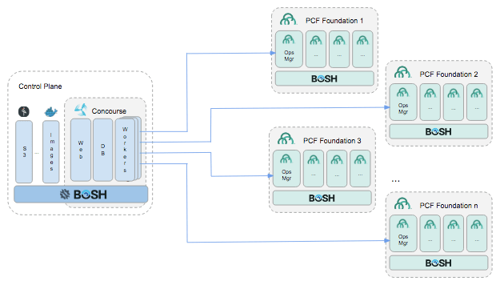

Use the bosh bootloader to stand up our control plane (bosh director, concourse, docker hub)

$ mkdir workspace
$ cd workspace
Go to here and follow the various instructions in the links
Also: brew install cloudfoundry/tap/credhub-cli
Also: install Fly CLI
$ mkdir bbl-workshop
$ cd bbl-workshop
We will distribute the Azure service account ENVs to everyone. Export them then:
$ bbl up
$ eval "$(bbl print-env)"
$ bosh login
$ bosh cloud-config
Now that we have our bosh director installed, we can deploy the concourse server that will be responsible for pipelining our PCF foundation installations.
$ bbl plan --lb-type concourse
$ bbl up
The BOSH bootloader is very versitile, with a simple switch of the plan we can use it to set up a concourse BOSH deployment. Now we need to configure that instance.
$ bosh upload-stemcell "https://bosh.io/d/stemcells/bosh-azure-hyperv-ubuntu-xenial-go_agent"
$ export EXTERNAL_HOST="$(bbl outputs | grep concourse_lb_ip | cut -d ' ' -f2)"
Also notice that as of this moment, we have uploaded two different types of stemcells. We will explore that concept later, probably after lunch, probably.
$ mkdir concourse-deployment
$ cd concourse-deployment
This next step may seem complicated, but we are just using inline commands to generate rather large .yml files without having to fuss with an editor. Simply copy and everything from cat to EOL.
cat > vars.yml <<EOL
external_host: "${EXTERNAL_HOST}"
external_url: "https://${EXTERNAL_HOST}"
network_name: 'private'
web_network_name: 'private'
web_vm_type: 'default'
web_network_vm_extension: 'lb'
db_vm_type: 'default'
db_persistent_disk_type: '1GB'
worker_vm_type: 'default'
deployment_name: 'concourse'
uaa_version: '66.0'
uaa_sha1: '2848d9fb65d2d556a918e8045359cf469c241123'
main_team_oauth_users:
- 'admin'
EOL
One more….
cat > credhub.yml <<EOL
# Add Variables for Passwords
- type: replace
path: /variables?/name=concourse_to_credhub_secret
value:
name: concourse_to_credhub_secret
type: password
- type: replace
path: /variables?/name=credhub_encryption_password
value:
name: credhub_encryption_password
type: password
# Add CredHub Release
- type: replace
path: /releases/-
value:
name: credhub
url: https://bosh.io/d/github.com/pivotal-cf/credhub-release?v=((credhub_version))
sha1: ((credhub_sha1))
version: ((credhub_version))
# Add CredHub client to UAA
- type: replace
path: /instance_groups/name=web/jobs/name=uaa/properties/uaa/clients?
value:
credhub_cli:
override: true
authorized-grant-types: password,refresh_token
scope: credhub.read,credhub.write
authorities: uaa.resource
access-token-validity: 1200
refresh-token-validity: 3600
secret: ""
concourse_to_credhub:
override: true
authorized-grant-types: client_credentials
scope: ""
authorities: credhub.read,credhub.write
access-token-validity: 30
refresh-token-validity: 3600
secret: ((concourse_to_credhub_secret))
# Add CredHub Job to Web Instance Group
- type: replace
path: /instance_groups/name=web/jobs/-
value:
name: credhub
release: credhub
properties:
credhub:
port: 8844
authorization:
acls:
enabled: false
authentication:
uaa:
url: "((external_url)):8443"
verification_key: ((uaa-jwt.public_key))
ca_certs:
- ((atc_tls.ca))
data_storage:
type: postgres
database: &credhub_db credhub
username: *credhub_db
password: &credhub_db_passwd ((credhub_db_password))
require_tls: false
tls:
certificate: ((atc_tls.certificate))
private_key: ((atc_tls.private_key))
ca_certificate: ((atc_tls.ca))
log_level: info
encryption:
keys:
- provider_name: int
key_properties:
encryption_password: ((credhub_encryption_password))
active: true
providers:
- name: int
type: internal
# Add CredHub DB to Postgres job
- type: replace
path: /instance_groups/name=db/jobs/name=postgres/properties/databases/databases/-
value:
name: *credhub_db
- type: replace
path: /instance_groups/name=db/jobs/name=postgres/properties/databases/roles/-
value:
name: *credhub_db
password: *credhub_db_passwd
- type: replace
path: /variables?/name=credhub_db_password?
value:
name: credhub_db_password
type: password
# Point ATC to CredHub
- type: replace
path: /instance_groups/name=web/jobs/name=atc/properties/credhub?
value:
url: ((external_url)):8844
client_id: concourse_to_credhub
client_secret: ((concourse_to_credhub_secret))
tls:
ca_cert:
certificate: ((atc_tls.ca))
insecure_skip_verify: true
# Extend wait times
- type: replace
path: /update/canary_watch_time
value: 1000-360000
- type: replace
path: /update/update_watch_time
value: 1000-360000
EOL
Now we have our yaml config files. Let’s put them to good use.
$ git clone https://github.com/concourse/concourse-bosh-deployment.git ../../concourse-bosh-deployment
This downloads the concourse bosh deployment into directory next to the bbl-workshop
$ pushd ../../concourse-bosh-deployment/cluster
If you don’t know what pushd and popd do, ask Chris.
bosh deploy -d concourse concourse.yml \
-l ../versions.yml \
-l ../../bbl-workshop/concourse-deployment/vars.yml \
-o operations/add-main-team-oauth-users.yml \
-o operations/uaa.yml \
-o operations/uaa-generic-oauth-provider.yml \
-o ../../bbl-workshop/concourse-deployment/credhub.yml \
-o operations/privileged-http.yml \
-o operations/privileged-https.yml \
-o operations/tls.yml \
-o operations/tls-vars.yml \
-o operations/web-network-extension.yml
Once that’s finished use popd to return to our concourse-deployment directory we created a few steps ago and download the concourse manifest.
$ bosh -d concourse manifest > concourse.yml
$ credhub login
$ export UAA_USERS_ADMIN_KEY=$(credhub find -n uaa_users_admin | head -n 2 | tail -n 1 | cut -d ' ' -f3)
$ export UAA_USERS_ADMIN_PASSWORD=$(credhub get -n $UAA_USERS_ADMIN_KEY | tail -n 3 | head -n 1 | cut -d ' ' -f2)
$ echo $UAA_USERS_ADMIN_PASSWORD
Copy the password and open https://${EXTERNAL_HOST} to login with admin/$UAA_USERS_ADMIN_PASSWORD
$ fly -t bbl-workshop login -c https://${EXTERNAL_HOST} -k
Copy / paste this callback to somewhere safe. More cat to EOL copy/paste
cat > hello-credhub.ybml <<EOL
jobs:
- name: hello-credhub
plan:
- do:
- task: hello-credhub
config:
platform: linux
image_resource:
type: docker-image
source:
repository: ubuntu
run:
path: sh
args:
- -exc
- |
echo "Hello $WORLD_PARAM"
params:
WORLD_PARAM: {{hello}}
EOL
Put that one to good use.
$ fly -t bbl-workshop set-pipeline -p hello-credhub -c hello-credhub.yml
$ fly -t bbl-workshop unpause-pipeline -p hello-credhub
$ fly -t bbl-workshop trigger-job -j hello-credhub/hello-credhub -w
Now we need to set a serious of ENVs. BTW, hope you kept that admin password.
$ env -u CREDHUB_PROXY -u CREDHUB_SERVER -u CREDHUB_CLIENT -u CREDHUB_SECRET -u CREDHUB_CA_CERT bash
$ credhub login -s https://${EXTERNAL_HOST}:8844 -u admin -p $UAA_USERS_ADMIN_PASSWORD --skip-tls-validation
$ credhub set -n /concourse/main/hello -t value -v MAIN-CREDHUB
$ fly -t bbl-workshop trigger-job -j hello-credhub/hello-credhub -w
One last override and our work here is done
$ credhub login -s https://$EXTERNAL_HOST:8844 -u admin -p $UAA_USERS_ADMIN_PASSWORD --skip-tls-validation
$ credhub set -n /concourse/main/hello-credhub/hello -t value -v PIPE-CREDHUB
$ fly -t bbl-workshop trigger-job -j hello-credhub/hello-credhub -w
$ exit
Also #exit!